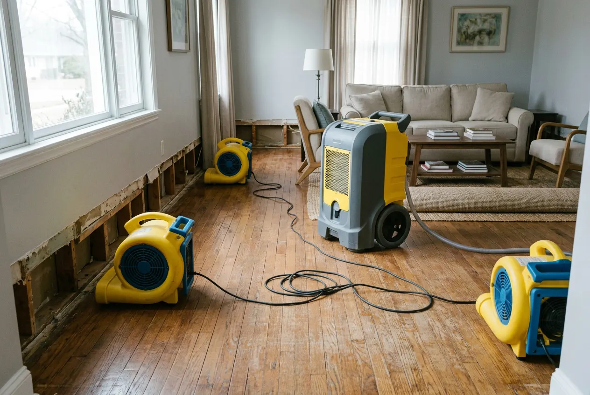

In short
- Stop the water first. Every main shutoff takes a few seconds; find yours before you need it.
- Never walk into standing water near outlets, cords or appliances until the power to that area is off.
- Photograph and video everything before you move or throw anything away.
- Wet materials need to start drying within 24 to 48 hours to keep mold from taking hold.
Water damage is a race against two clocks. The first is the water itself, which keeps spreading into walls, floors and cabinets for as long as it runs. The second starts the moment it stops: the EPA advises drying wet materials within 24 to 48 hours to prevent mold. What you do in the first hour decides how much of your home is still salvageable when the second clock runs out.
Here is the order we tell every caller to follow.
1. Stop the water at the source
Find the closest shutoff and close it. For a toilet, sink or appliance, there is usually a small valve on the supply line behind or under it; turn it clockwise. If you can't find one, or the leak is inside a wall or ceiling, close the main shutoff for the house.
In most Bay Area homes the main is in one of three places:
- On an outside wall near where the line enters the house, often near a hose bib on the front or side.
- In the garage, near the water heater.
- At the meter box at the curb, which may need a meter key.
Once it is closed, open a faucet on the lowest floor to relieve pressure in the lines.
2. Make the area safe before you walk into it
Water and electricity are the real danger in the first hour, not the water itself.
- Power: if water is near outlets, power strips, appliances or the panel, switch off the breakers for that area. Only do this if you can reach the panel while standing on a dry surface. If you can't, leave the house and call.
- Ceilings: a sagging, bulging ceiling can hold a lot of water. Keep people and pets out from under it.
- What came out matters: water from a supply line or tub is clean when it starts. Water from a toilet overflow, a floor drain or a sewer backup is contaminated. Don't touch it without gloves and boots, and keep children and pets away.
3. Document everything before you move it
Before you pick anything up, take photos and video of every wet room: floors, baseboards, the bottom of walls, cabinets and the source of the leak. Get wide shots of each room and close-ups of damage. If you can, hold a phone near the floor and walk the room slowly on video. A minute of footage now settles questions for weeks.
Keep anything that failed, such as the burst supply line or the cracked fitting. Your adjuster or plumber may want to see it.
4. Move what you can, safely
Once the area is safe:
- Lift furniture off wet carpet and put foil or plastic under the legs to stop rust and stain transfer.
- Move rugs, electronics, documents and photos to a dry room.
- Hang up wet curtains and pull up loose throw rugs.
Don't throw anything away yet, even if it looks ruined. It may need to be inventoried for your claim.

Illustrative5. Start drying, and know what fans can't do
Open windows if the air outside is drier than inside, and run any dehumidifier you own. Mop up standing water.
Household fans help with surface water, but they can't reach the water that has wicked into drywall, under baseboards, into the subfloor or behind cabinets. That hidden water is what turns into mold and swollen floors a week later. If water spread past one room, soaked into carpet pad, or sat for more than a few hours, you need extraction equipment, dehumidifiers and moisture readings to prove the structure is dry, not just the surface.
6. Make the calls
Once the water is stopped and the home is safe:
- Call a restoration company. We dispatch around the clock, take moisture readings on arrival and start extraction the same visit.
- Call a plumber if the source needs repair. We can recommend one if you don't have one.
- Call your insurer or agent, or decide whether to. Not every leak is worth a claim. Our guide to whether you should file a water damage claim walks through that decision.
What not to do in the first hour
- Don't use a household vacuum on standing water. It is an electrical hazard and ruins the vacuum.
- Don't turn on ceiling lights or fans in a room where the ceiling is wet.
- Don't paint over stains or close up wet walls.
- Don't sign anything you haven't read. A good restoration company will explain each document before you sign it.
What happens when you call Havok
A dispatcher answers, not a phone tree. We ask what happened, where the water came from and whether anyone is in danger, then send a crew. On arrival a named project lead walks the home with you, maps moisture with meters and a thermal camera, explains what has to come out and what can be dried in place, and gives you the plan in writing before work starts. You can follow every reading and photo in the job tracker until the home is verified dry.
If water is on your floor right now, stop the source, make the room safe, and request dispatch. Insurance details can wait. We will ask on site.
Frequently asked questions
How long do I have before water damage turns into mold?
The EPA advises drying water-damaged materials and belongings within 24 to 48 hours to prevent mold growth. Drywall, carpet pad and the bottom of cabinets are usually the first places it appears.
Should I turn off the electricity?
If water is near outlets, power strips, appliances or the electrical panel, turn off power to that area at the breaker, but only if you can reach the panel without standing in water. If you can't, leave the house and call.
Can I dry it myself with fans?
Box fans move surface air but don't pull water out of wall cavities, subfloors or cabinet bases. If water reached more than one room, soaked into carpet pad or went under walls, you need extraction, dehumidifiers and moisture readings to know it is actually dry.
Do I call my insurance company or a restoration company first?
Stop the water and make the home safe first. You can call us and your insurer in either order. Insurers expect you to take reasonable steps to prevent further damage, and starting mitigation right away is one of those steps.
Sources
This article is general information, not legal, insurance or medical advice. Images are illustrative.